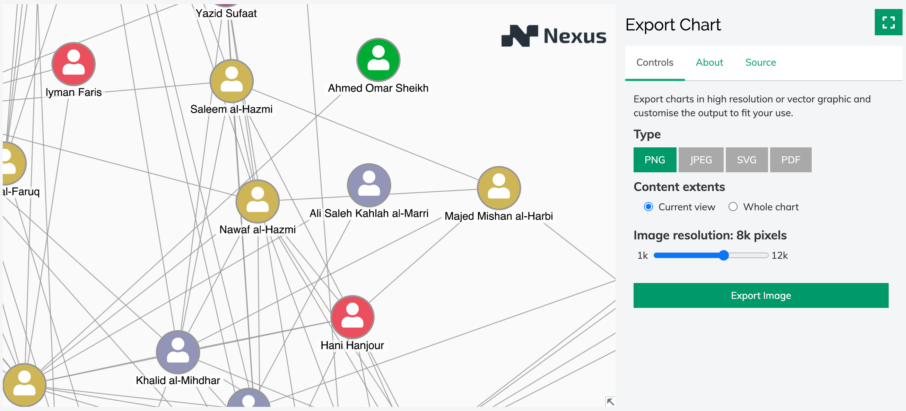
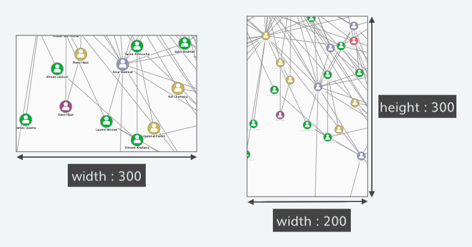

Chart Export
Introduction#
Exporting charts as images can be useful for presenting, sharing, printing or keeping digital records of your charts. To ensure the most versatile use, exporting should meet certain criteria:
- Useful format - Offers popular and easily accessible format types such as SVG or PDF.
- High quality output - Requirements may vary depending on the use case, but digital use may require high resolution or vector quality.
- Customisability - The content being exported should be customisable e.g. to fit the size needs or to integrate into reports or presentations.
The chart.export() function, currently in beta, offers all of the above in both raster (PNG, JPEG) and vector (SVG, PDF) format.

The chart.export function also supports exporting to PDF document format.
Exporting to image formats#
The chart.export() function offers export to PNG, JPEG and SVG image file formats. For more details about exporting to PDF document format, see a separate PDF Export page.
chart.export({
type: 'png',
extents: 'chart',
fitTo: { width: 4000, height: 4000 },
}).then((exportResult) => {
// do more after export
});
The extents option lets you specify the exported content:
- 'view' - exports the current on-screen view, where the default aspect ratio is determined by the on-screen view
- 'chart' - exports the whole chart, where the default aspect ratio is determined by the whole chart
The fitTo
option allows you to change width and height, changing the size and aspect ratio of the image:
- one dimension specified - the exported image is scaled to match this size
while keeping the aspect ratio determined by
extents - both dimensions specified - the exported image scales within the maximum limits given by the dimensions and if needed, additional content is added to fill the entire aspect ratio
Note that in map mode, these options behave slightly differently:
- The
extentsoption is ignored and Nexus always generates the on-screen view of the chart. - The
fitTooption is ignored and the output size always corresponds to the size of the on-screen view.
- As a vector format, SVG lets users zoom in to see additional detail. To ensure this information isn't lost, the adaptiveStyling option is not applied during the export to SVG.
- For PNG and JPEG, adaptive styling depends on the output size. Increasing the size increases the image resolution, displays more details and keeps items looking sharp during zooming. The maximum resolution that can be successfully exported is determined by the combination of device/OS/browser and memory available.
- Exporting charts in map mode may exclude items from some custom Leaflet layers, including markers and shadows.
Exporting charts with multiple SVGs#
If you are exporting into SVG and your charts include multiple different SVG images,
make sure that SVG elements such as mask or pattern that have id property specified
do not use duplicate ids between different SVG images.
Font embedding in SVG#
If you are exporting into SVG and your charts use custom fonts or font icons, you need to embed the appropriate font files for the items to be displayed correctly in the output:
chart.export({
type: 'svg',
fonts: {
'Font Awesome 5 Free Regular': { src: '../fonts/fontAwesome5/fa-regular-400.woff' },
Raleway: { src: './fonts/Raleway/Raleway-Regular.ttf' },
},
}).then((exportResult) => {
// do more after export
});The fonts
option takes a dictionary of font files to embed in the output indexed by font name.
The entry for each font is an object with a single key src,
the value of which specifies the URL or base64 encoding of .woff or .ttf font file.
To help optimise the size of the output, Nexus will only embed the font files which are required for any fonts, font icons and characters to be rendered correctly. Missing font files will populate warnings in the result object. Nexus will replace unavailable fonts with ‘sans-serif’ and embed unavailable font icons as PNG images.
To further improve loading performance and output size, you can also bundle font icons from multiple font families. See Slow loading performance when using multiple font families.